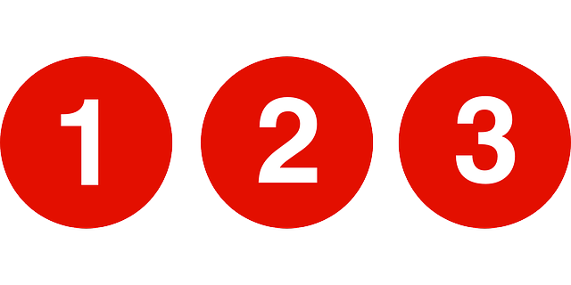
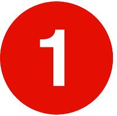

Delay details

Due to signal problems at the 42nd Street - Times Square Station:
 No Train Service for both directions
from the14th Street Station to 96th Street Station.
limited trains service for both directions
Trains are running on line from the the Nevins Street Station to 149th Street-Grand Concourse Station.
No Train Service for both directions
from the Chambers Street Station to 96th Street Station.
Please allow additional travel time.